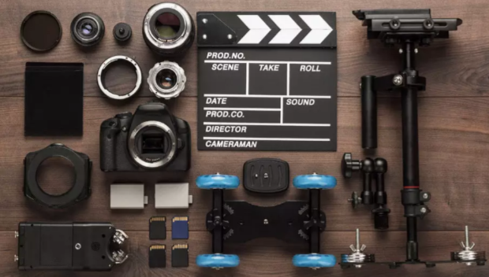

About Myself

I am Jagadish, nice to meet you! Over the last 7 years, I've managed to grow from an amateur videographer filming weddings of my relatives to an acknowledged professional cooperating with world brands and fashion icons. Coca-Cola, Zadig & Voltaire, Tiffany & Co - these are just a few of those I have worked with.
Yet, event videography was embedded in my heart. Seeing and capturing true emotions at the most
important people's occasions is what makes me truly love this profession.
I always strive to think outside the box. Looking at everyday things from a new perspective helps me